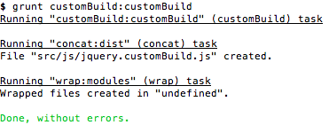

Modular jQuery Plugins


Greg Franko
What does Modular Mean to You?
Inspiration For This Talk

Example Require.js Module
// Options Module
// --------------
// The define method is passed a JavaScript function
define(function () {
// Returns an object literal with our options
return {
showEffect: 'fadeIn',
hideEffect: 'slideUp'
}
});
How Does This Apply to jQuery Plugins?
// Adding the tooltip method to the jQuery prototype
$.fn.tooltip = function ( options ) {
return this.each(function () {
// Boilerplate jQuery plugin code goes here
});
// Plugin Constructor
function Tooltip() {};
// All my plugin logic goes here
Tooltip.prototype = {};
//Default Options
$.fn.tooltip.options = {};
}
Is this bad?
Let the Refactor Begin!
jQueryUI Widget Factory
Example Widget Factory Plugin
// Calling the jQueryUI Widget Factory Method
$.widget("an.example", {
// These options will be used as defaults
options: {
someOption: true
},
// Constructor
_create: function(internal) {}
// Custom method we added to our plugin instance
customMethod: function() {}
// The rest of your plugin goes here
});
Calling Our Plugin
$('.test').example();
Let's Review The State Of Our Plugin
What We Have Done:
What We Still Need To Do:
Let's Create Our First File!
// options.js
// ----------
var example = {};
example.options = {
someOption: true
};
On To The Next File!
// _create.js
// ----------
example._create = function() {
// Our constructor logic goes here
};
Can you see the pattern?
Once We Are Done Decoupling...
// _plugin.js
// ----------
// Calling the jQueryUI Widget Factory Method
$.widget("an.example", example);
Let's Review The State Of Our Plugin
What We Have Done:
What We Still Need To Do:
Before We Review the Build Process...
jqfactory
Example jqfactory Plugin
// Calling the jqfactory Method
$.jqfactory('person.greg', {
// Default plugin options
options: {
occupation: 'JavaScript Engineer'
},
// Plugin Constructor (called first)
_create: function() {},
// Dom manipulation goes here (called second)
_render: function() {},
// Plugin event bindings (called third)
_events: {
'click': function() {}
},
// All event listeners are now bound (called last)
_postevents: function() {}
});
jQueryUI Widget Factory or jqfactory?
We Won't Be Reviewing jqfactory In Detail...
Plugin Build Process
Grunt
Creating Our Gruntfile Part 1
// Gruntfile.js
module.exports = function(grunt) {
var baseFilePath = 'src/js/',
fileToBuild = baseFilePath + 'jquery.customBuild.js';
// Our Grunt configuration
grunt.initConfig({
concat: {
dist: {
src: '<%= customBuild.files %>',
dest: fileToBuild
}
},
wrap: {
modules: {
src: [fileToBuild],
wrapper: [';(function($, undefined) {\n', '\n}(jQuery));']
}
}
});
grunt.loadNpmTasks('grunt-contrib-concat');
grunt.loadNpmTasks('grunt-wrap');
// Our custom task will go here next
}
Creating Our Gruntfile Part 2
// Registers a default Grunt Task
grunt.registerTask('customBuild', 'customBuild task', function() {
var defaultFiles = ['options', '_create', '_plugin', 'customMethod'],
args = this.args, customFiles = [], index, i = -1;
// Loops through and excludes any file that was passed
if(args.length) {
while(++i < args.length) {
index = defaultFiles.indexOf(args[i]);
if(index !== -1) defaultFiles.splice(index, 1);
}
}
// Makes sure that each passed file has the correct file path
customFiles = defaultFiles.map(function(currentFile) {
return baseFilePath + currentFile + '.js';
});
// Sets a Grunt configuration variable
grunt.config.set('customBuild.files', customFiles);
// Run's the Grunt concat plugin
grunt.task.run('concat', 'wrap');
});
Running Our Custom Build
grunt customBuild
Excluding a File In Your Build
grunt customBuild:customMethod
Success!
Plugin Source Code
;(function($, undefined) {
// options.js
// ----------
var example = {};
example.options = {
someOption: true
};
// _create.js
// ----------
example._create = function() {
// Our constructor logic goes here
};
// _plugin.js
// ----------
// Calling the jQueryUI Widget Factory Method
$.widget("an.example", example);
}(jQuery));
Let's Review The State Of Our Plugin
What We Have Done:
What We Still Need to Do:
Web Custom Build
DownloadBuilder.js
First Step
Second Step
var builder = new DownloadBuilder({
location: 'github',
author: 'gfranko',
repo: 'jquery.examplePlugin.js',
branch: 'master',
cache: true,
client_id: '',
client_secret: ''
});
Final Step
$('#generate-button').on('click', function() {
var checkedBoxes = $('#js-files:checked'),
fileName = 'jquery.examplePlugin.custom.js',
language = 'javascript';
builder.buildURL(checkedBoxes, fileName, language, function(data) {
/*
file - data.content
file url - data.url
file name - data.fileName
file language - data.lang
*/
});
});